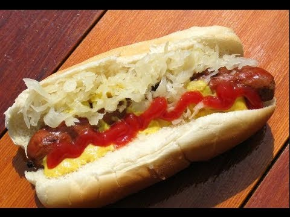
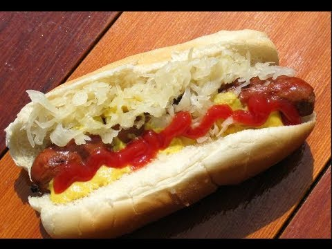

Let's face the cold, delicious facts: sometime between breakfast and dinner, you’re gonna need a lunch break. Don’t stop at a brown bag — get out of the office and find a quick lunch spot near you. Explore these lunchtime heroes before you decide on your favorite.
Whether you’re here for take-out, gathering of friends and family, or a meal for one, you are in for a great staff experience that will leave you with a lasting impression of quality.

 
